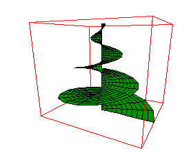

Euler is a powerful numerical laboratory with a programming language. The system can handle real, complex and interval numbers, vectors and matrices. It can produce 2D/3D plots. Included is a programming language.
Euler comes with Yacas, a computer algebra system. So one can combine symbolic and fast numeric programming. For more information about Yacas, view their homepage, or read the Euler documentation.
All versions are freeware and open source under the GNU general license. Euler is not a MatLab clone, but similar to this program.
R. Grothmann